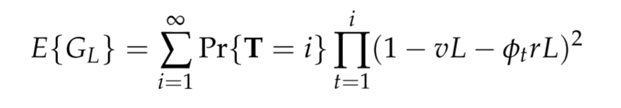

Haplotype homozygosity#
We define haplotype homozygosity (\(G_L\)) as the probability that two alleles have the same DNA sequence at a haplotype locus of length \(L\). The expectation of haplotype homozygosity is given by

where T is a random variable representing time to coalescence, \(v\) is the locus scaled mutation rate, \(r\) is the locus scaled recombination rate and \(\phi_t\) is the effective recombination parameter. From empirical observations we estimate that \(r = 7.4 \times 10^{−4}\) per kilobase per generation and \(v = 9 \times 10^{−5}\) per kilobase per generation.
We define \(\gamma\) as the haplotype homozygosity of a locus spanning 2 centimorgans which is approximately 27 kilobases. The get_diversity function calculates \(\gamma\) unless we specify otherwise, i.e. it assumes by default that \(L = 27\) kb.
We evaluate the above expression by using coalestr as follows:
We create a
Populationby specifying its transmission history.We obtain the probability distribution of T using
get_coalescent.We evaluate the above summation series using
get_diversity.
This is very similar to the approach used to obtain nucleotide diversity with one important difference. We also need to evaluate \(\phi_t = f H_W\) where \(H_W\) is the mean level of within-host heterozygosity in the population at time \(t\), and \(f\) is a factor that we use to correct for mating bias and other causes of non-effective recombination.
This means that if we wish to estimate haplotype homozygosity at a certain time, we need to estimate \(H_W\) at various times before that. We do this by providing a list (or range) of observation times when we invoke the get_coalescent function. This tells get_coalescent to perform a time series analysis that will give us \(H_W\) and thus \(\phi_t\) at different points in time in our simulation.
! pip install coalestr
from coalestr import cs
import matplotlib.pyplot as plt
# We create a history of transmission parameters
# which in this case are constant over time
# my_history = [[t_sim, N, Q, X, M]]
# t_sim = duration of simulation
# N = effective number of hosts (Nh)
# Q = quantum of transmission
# X = crossing rate of transmission chains (chi)
# M = number of migrant hosts (Nm)
my_history = [[10000, 400, 10, 0.5, 0]]
my_population = cs.Population(my_history)
# We specify observation times in backwards time
# i.e. as the number of generations before the present
observation_times = range(0, 10000, 1000)
my_population.get_coalescent(observe = observation_times)
my_population.get_diversity()
Observation time. Events captured. Mean coalescence time
beho wiho beho wiho
0 99.9 100.0 1349.3 1057.1
1000 99.9 99.9 1342.9 1052.1
2000 99.7 99.8 1330.9 1042.7
3000 99.4 99.6 1308.8 1025.4
4000 98.8 99.1 1268.7 994.0
5000 97.5 98.0 1197.7 938.4
6000 94.8 95.9 1076.6 843.6
7000 89.1 91.4 880.3 689.9
8000 77.1 82.1 588.9 461.7
9000 52.1 62.5 229.1 180.0
Observation time. SNP heterozygosity. Haplotype homozygosity at 27.0 kb locus
beho wiho beho wiho
9000 5.05e-06 3.97e-06 5.25e-02 2.50e-01
8000 1.30e-05 1.02e-05 1.90e-02 2.11e-01
7000 1.94e-05 1.52e-05 1.81e-02 2.10e-01
6000 2.37e-05 1.86e-05 1.81e-02 2.10e-01
5000 2.64e-05 2.06e-05 1.81e-02 2.10e-01
4000 2.79e-05 2.19e-05 1.81e-02 2.10e-01
3000 2.88e-05 2.26e-05 1.81e-02 2.10e-01
2000 2.93e-05 2.29e-05 1.81e-02 2.10e-01
1000 2.95e-05 2.31e-05 1.81e-02 2.10e-01
0 2.97e-05 2.33e-05 1.81e-02 2.10e-01
In the above cell we see that haplotype homozygosity for a 2 centimorgan (27kb) locus stabilises at a value of 0.018 in the general population (beho means between-host) and 0.21 in the within-host (wiho) population.
Observation time 0 means the present and observation time 9000 means 9000 generations before the present. Our results for SNP heterozygosity and haplotype homozygosity are unreliable at observation time 9000 because only about half of coalescent events are captured but they subsequently stabilise and at observation time 0 we capture 99.9% of coalescent events.
Our estimates of haplotype homozygosity depend on the effective recombination parameter \(\phi_t\) which in turn depends on within-host haplotype heterozygosity at earlier time points. Our estimates of \(\phi_t\) get better with time (i.e. as we proceed from observation time 9000 to observation time 0) because they are based on progressive improvements in our estimates of within-host haplotype heterozygosity.
In the cell below we estimate \(\gamma\) (haplotype homozygosity of a 2 centimorgan locus) for different values of N (effective number of hosts \(N_h\)), Q (quantum of transmission \(Q\)) and X (crossing rate of transmission chains \(\chi\)).
N_list = list(range(10, 201, 10)) + list(range(250, 401, 50)) + list (range(500, 1001, 100))
Q_list = [2, 10]
X_list = [0, 1]
duration = 10000 # duration of simulation in generation
fig, [a1, a2] = plt.subplots(1, 2, figsize = (12, 5), sharey = True)
for X in X_list:
for Q in Q_list:
beho_hap_hom = []
wiho_hap_hom = []
for N in N_list:
history = [[duration, N, Q, X, 0]] # t_his, Nh, Q, chi, migration
my_pop = cs.Population(history)
my_pop.get_coalescent(observe = "auto", show = False)
my_pop.get_diversity(show = False)
beho_hap_hom.append(my_pop.diversity[0,3]) # between-host haplotype homozygosity
wiho_hap_hom.append(my_pop.diversity[0,4]) # within-host haplotype homozygosity
a1.plot(N_list, beho_hap_hom, linewidth=2, label = '\u03C7 {0:.1f}, Q {1:.0f}'.format(X, Q))
a2.plot(N_list, wiho_hap_hom, linewidth=2, label = '\u03C7 {0:.1f}, Q {1:.0f},'.format(X, Q))
a1.set_xlabel("Nh", fontsize=12)
a1.set_ylabel("Haplotype homozygosity", fontsize=12)
a1.legend(title = 'Between hosts', frameon=True, fontsize=12)
a1.grid(visible=True, which='both', color='0.65', linestyle='-')
a2.set_xlabel("Nh", fontsize=12)
a2.legend(title = 'Within-host', frameon=True, fontsize=12)
a2.grid(visible=True, which='both', color='0.65', linestyle='-')
plt.show()